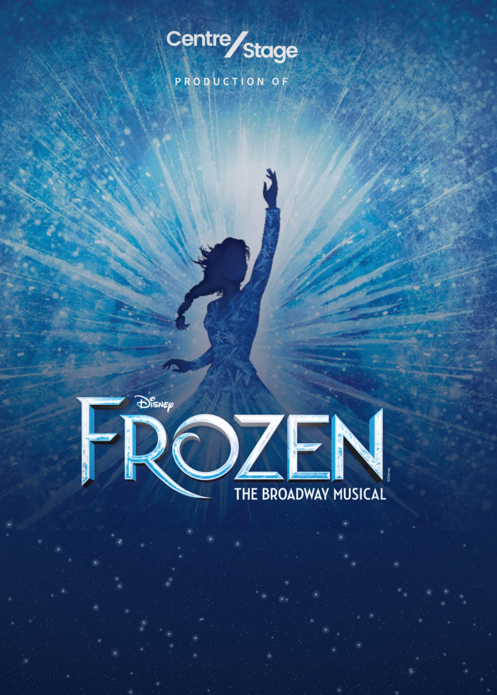
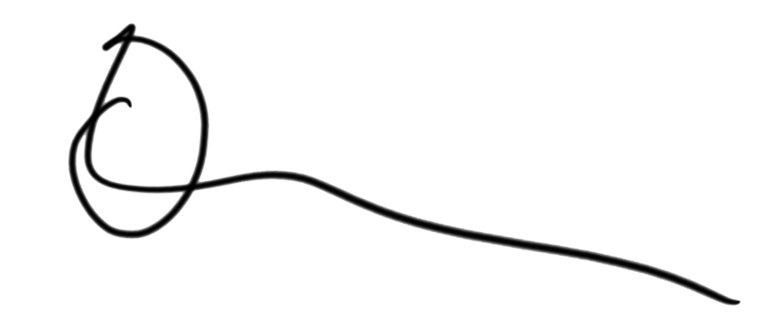

We acknowledge
Country.

CentreStage acknowledges the Wadawurrung people as the Traditional Owners of the land on which we rehearse, build and perform. We pay our respects to Elders past and present, and to all Aboriginal and Torres Strait Islander people who call this Country home.
Storytelling has taken place on this land for more than sixty thousand years. We are grateful to add our small part to that tradition, and we are committed to a company where First Nations artists, audiences and stories are welcomed, resourced and centre stage.
Every spotlight we turn on must illuminate not only talent, but truth.
David Greenwood OAM · Managing DirectorCreative team
Production team
Music and Lyrics by
Kristen Anderson-Lopez & Robert Lopez
Book by
Jennifer Lee
Originally Directed on Broadway by
Michael Grandage
Based on the Disney film written by Jennifer Lee and directed by Chris Buck & Jennifer Lee
Originally produced on Broadway by Disney Theatrical Group
Licensed exclusively by Music Theatre International (Australasia). All authorised performance materials are also supplied by Music Theatre International (Australasia). www.mtishows.com.au
The winter was never
the problem.
Welcome to Arendelle, and thank you for being here.
There is a reason this story has held on to us. On the surface, Frozen is a fairytale about a kingdom trapped in an endless winter. Underneath, it is about a young woman taught — with love, and with the best of intentions — that the truest thing about her is dangerous. Something to be hidden. Something nobody should ever see.
Most of us have been handed a version of that instruction. We live in a society that still quietly asks people to mask — to manage the parts of themselves that might make a room uncomfortable. A disability, a diagnosis, a way of thinking, a way of loving, a struggle carried privately while everything looks fine from the outside. We become very good at it. We learn to keep the gloves on, and to offer the version of ourselves that asks the least of everybody else.
And it costs us exactly what it costs Elsa. It costs us connection. What I love about this musical is that it never resolves that by asking her to become someone else. Nobody fixes her. Her magic is never treated as an illness to be cured. What changes is that she stops being frightened of herself — and the winter lifts. The thaw was never going to arrive through control, only through love, and through being known.
That is why we wanted this title, and why we wanted it now. CentreStage has always been built on a simple idea: that everybody has the potential to be a great performer, and that the arts should be open to all people. This organisation is owned and led by a person with disability and a member of the LGBTQIA+ community, and our team includes people who identify as First Nations and people from a range of minority communities. That is not a statement drafted for a website — it is simply who we are, and it shapes every room we run.
The company you are about to watch spans performers and creatives aged seven to eighty; some auditioning for the first time, some with us for a decade. Three young performers share Young Anna and three share Young Elsa, because the aim was never to find the single child who was best. It was to give more of them the stage.
Watch them tonight, and watch how little they are hiding. Thank you for choosing live theatre made by your own community, and thank you to the creative team, crew, volunteers and families who made a year of Sundays possible. And to anyone here who has been holding something in for a very long time — we hope you leave a little lighter than you arrived.
Two sisters,
one door.
The whole show, for me, lives in a closed door and the person on either side of it.
When I first sat down with this script, I expected to be directing a story about ice and magic and spectacle. What I found instead was a story about a family who love each other very much and get almost everything wrong — and about the years of silence that follow one frightened decision made in a single night.
That became the spine of this production, and everything you will see tonight is built around it. Rather than treat Elsa's magic as a special effect, we have treated it as a feeling: something that surges when she is frightened, contracts when she is controlled, and finally moves freely when she is safe. You will notice the design follows her emotional state far more closely than it follows the weather. When Arendelle freezes, it is not really about the temperature.
A note on the ensemble, because in this show they matter enormously. The citizens of Arendelle are not scenery. They are the community that shuts its gates, that gossips at a coronation, that turns on a queen it does not understand, and that eventually welcomes her home. We have given them specificity — names, families, relationships you may only half-catch — because a kingdom is only ever as convincing as the people standing in it.
Then there are the young performers. Six of them share the roles of Young Anna and Young Elsa across three casts, and watching them work has been the great privilege of this process. They arrive without the self-consciousness adults have to unlearn. They ask direct questions. They cry in the right places. Several times this year one of them has found something in a scene that every adult in the room had walked straight past.
If there is one thing I hope you carry out of the theatre tonight, it is what happens in the final quarter of the second act — the moment the story stops asking who will rescue whom, and answers the question rather differently to the way a fairytale usually would.
Thank you to my extraordinary creative team, to our crew and volunteers, and to every family who has driven to North Geelong on a Sunday since October. And thank you for being here. A closed door is a terrible thing. An audience is the opposite of one.

Michele MarcuDirectorNine months,
one night.
A producer's job, as far as I can tell, is to make sure that everybody else can do theirs.
None of these people are paid, and almost all have full-time jobs. This is my first production in this chair, and the thing that has surprised me most is how little of it happens on a stage. It happens in spreadsheets and group chats, in phone calls about hire trucks and rehearsal room bookings, in a hundred small decisions made months before anybody sings a note.
What you are watching tonight represents around nine months of work by well over a hundred people. There are the performers, whom you will see, and the creative team, whose names are printed a few pages from here. Then there is everybody else: the crew who move a castle in the dark in under ninety seconds, the wardrobe volunteers who have hand-finished more costumes than I can count, the parents who signed up to chaperone, the people who built the set in a shed on weekends, and the front of house team who will sell you an ice cream at interval and then go home and do it again tomorrow night.
That is worth stating plainly, because community theatre is often described as though it were a smaller version of professional theatre. It is not. It is a different thing entirely — a group of people who have no obligation to be in the room, choosing to make something difficult and beautiful together, to a standard nobody is forcing them to meet.
Staging Frozen has tested that goodwill more than most titles would. It is a technically demanding show with a large cast, an ambitious design, live orchestra, young performers across three casts, and an audience arriving with very specific expectations. Every department has had to solve a problem this year that they had not solved before.
My thanks to Michele, whose vision for this production has been clear from the first meeting and has never wavered; to Brittney and the orchestra for the sound you are about to hear; to Chloe for turning a large group of people into a company that moves as one; and to David, for handing a first-time producer a show of this size and then backing the decision.
Thank you also to our advertisers and sponsors, whose support is the practical reason a ticket to community theatre in Geelong still costs what it does.
And thank you for coming. A show only exists while somebody is watching it. Enjoy your evening in Arendelle.
The company.
Principals
Featured
Youth roles
Ensemble
PERFORMER NAME · PERFORMER NAME · PERFORMER NAME · PERFORMER NAME · PERFORMER NAME · PERFORMER NAME · PERFORMER NAME · PERFORMER NAME · PERFORMER NAME · PERFORMER NAME · PERFORMER NAME · PERFORMER NAME · PERFORMER NAME · PERFORMER NAME · PERFORMER NAME · PERFORMER NAME · PERFORMER NAME · PERFORMER NAME · PERFORMER NAME · PERFORMER NAME · PERFORMER NAME · PERFORMER NAME · PERFORMER NAME · PERFORMER NAME
Arendelle citizens · castle staff · Oaken's family · the Hidden Folk · featured dancersThree casts.
The roles of Young Anna and Young Elsa are shared across three youth casts, so that more young performers can take the stage. Each cast is named for something from the world of the show — the lights that dance above the North Mountain, the frozen heart that only love can thaw, and the first thaw that returns summer to Arendelle.
The songs.
Act One
Act Two
Recording
No photography, video or audio recording is permitted. This is a condition of our performance licence.
Latecomers
Admitted at a suitable break, at the venue's discretion.
Effects
Contains theatrical haze, strobe and low-frequency sound.
Accessibility
Accessible seating and hearing loops via the Geelong Arts Centre box office.
Act One.
In the kingdom of Arendelle, two young sisters play alone in the great hall at night. One of them can make snow.
Young Elsa and Young Anna are inseparable, and Elsa's magic is their shared secret. But in the middle of a game the magic slips, and Anna is struck. Their parents, King Agnarr and Queen Iduna, carry her to the Hidden Folk, who heal her by removing every memory of the magic that hurt her. Their leader, Pabbie, warns that Elsa's gift will grow — and that fear will be its enemy.
The King's answer is separation. The gates of the castle are closed, the staff sent away, and Elsa is taken from her sister and taught to hide what she is: conceal it, don't feel it, don't let it show. Anna, remembering nothing, spends her childhood knocking at a door that never opens, growing up in an empty castle beside a sister who will not look at her.
Years pass. The King and Queen sail out on a voyage and do not return. The sisters are left alone in the same house, still strangers, until the day of Elsa's coronation forces the gates open for the first time in thirteen years.
Arendelle fills with visitors. Anna, giddy at the sight of actual people, collides with the charming Prince Hans of the Southern Isles, and within a single evening believes she has found the thing she has been missing her whole life. Elsa survives the ceremony with her gloves off and her hands shaking, and holds herself together — until Anna asks for her blessing to marry a man she met that afternoon.
The argument is public. Elsa refuses. Anna presses. A glove comes off, the fear breaks through, and ice tears across the hall in front of the entire court. Named a monster by the Duke of Weselton, Elsa runs.
She climbs into the mountains, and for the first time in her life stops holding back. Alone on the North Mountain she lets the storm come, builds a palace out of it, and finds something like freedom in being the thing everyone feared. Behind her, Arendelle freezes solid.
Anna sets out after her, leaving Hans in charge. In a trading post she finds Kristoff, an ice harvester with a reindeer and no patience for royalty, and talks him into guiding her up the mountain. On the way they meet Olaf, a snowman built from a childhood memory, who is very warm for someone made of snow and who wants, more than anything, to see summer.
Anna reaches the ice palace and finds her sister transformed and unreachable. She tells her the kingdom is buried in winter. She asks her to come home. Elsa, terrified of what she has already done, tells her to go — and in the panic of trying to make her leave, strikes her sister a second time.
Anna is carried out into the snow. Her hair is turning white.
Act Two.
An eternal winter holds Arendelle, and the ice inside Anna is spreading towards her heart.
Kristoff takes Anna to the Hidden Folk, hoping they can heal her as they healed her once before. Pabbie's answer is harder this time: the ice is in her heart, and only an act of true love can thaw it. Believing that means Hans, Kristoff races her back down the mountain to Arendelle.
On the North Mountain, Hans arrives at the head of a search party. Elsa, cornered and desperate not to hurt anyone, loses control again; she is knocked unconscious and taken back to the kingdom in chains, imprisoned in the castle she grew up hiding in.
Anna is delivered to Hans, freezing, and asks him for the kiss she is certain will save her. He doesn't give it. He tells her the truth instead: he was never in love with her, he came looking for a throne, and a lonely girl desperate to be chosen was the easiest way to reach one. He leaves her locked in a cold room to die, and goes out to tell the court that Elsa killed her sister.
Olaf finds her and gets her out. In the wind on the fjord, Anna finally understands what love is supposed to look like — and it looks like Kristoff, who has turned back for her.
Elsa breaks out of her cell and flees onto the frozen fjord, and the storm follows her. Through the white-out Anna sees Kristoff coming for her from one direction and Hans closing on her sister with a drawn sword from the other. She chooses. She turns away from the person who could save her, throws herself in front of Elsa, and the cold takes her as the blade falls.
Anna freezes solid. The storm stops.
And in the silence, holding her sister, Elsa understands the thing nobody ever told her: love is not the opposite of her magic, it is what governs it. Her grief thaws Anna, and Anna's sacrifice thaws everything else. The ice lets go of the fjord, summer comes back to Arendelle, and Olaf gets his flurry.
Hans is sent home in disgrace. The Duke of Weselton is shown the door. Kristoff gets a new sled and, more importantly, an answer. And Elsa — who spent her whole life being told that the truest thing about her was dangerous — opens the gates and keeps them open.
Nobody fixes her. She was never broken. She simply stops being afraid, and lets herself be known.
Building Arendelle.
A kingdom that freezes over in front of an audience has to be built twice — once as a summer court, and once in ice. These pages will carry the set and costume design for our production.
Set design by Jason Stoddart. Costume design by Virginia Connell, with wardrobe managed by Dawn Murdoch. Captions to be confirmed with the design team before print.
PERFORMER NAME (pronouns)
ElsaPERFORMER NAME is delighted to be joining the company of Frozen. This placeholder biography runs to approximately 130 words — adjust to suit. A bio of this length holds training, a selection of credits, a line about the performer away from the stage, and a closing thanks. Training might read: a graduate of the Victorian College of the Arts, with further vocal study at the Melbourne Conservatorium. Credits are set as Production · Role · Year: The Music Man · Marian Paroo · 2025; & Juliet · Ensemble · 2026; Les Misérables · Éponine · 2022, all for CentreStage. Away from the stage, PERFORMER NAME teaches at a local primary school. They would like to thank the creative team, and their family for every drive to rehearsal.
PERFORMER NAME (pronouns)
AnnaPERFORMER NAME is delighted to be joining the company of Frozen. This placeholder biography runs to approximately 130 words — adjust to suit. A bio of this length holds training, a selection of credits, a line about the performer away from the stage, and a closing thanks. Training might read: a graduate of the Victorian College of the Arts, with further vocal study at the Melbourne Conservatorium. Credits are set as Production · Role · Year: The Music Man · Marian Paroo · 2025; & Juliet · Ensemble · 2026; Les Misérables · Éponine · 2022, all for CentreStage. Away from the stage, PERFORMER NAME teaches at a local primary school. They would like to thank the creative team, and their family for every drive to rehearsal.
PERFORMER NAME (pronouns)
KristoffPERFORMER NAME is delighted to be joining the company of Frozen. This placeholder biography runs to approximately 130 words — adjust to suit. A bio of this length holds training, a selection of credits, a line about the performer away from the stage, and a closing thanks. Training might read: a graduate of the Victorian College of the Arts, with further vocal study at the Melbourne Conservatorium. Credits are set as Production · Role · Year: The Music Man · Marian Paroo · 2025; & Juliet · Ensemble · 2026; Les Misérables · Éponine · 2022, all for CentreStage. Away from the stage, PERFORMER NAME teaches at a local primary school. They would like to thank the creative team, and their family for every drive to rehearsal.
PERFORMER NAME (pronouns)
OlafPERFORMER NAME is delighted to be joining the company of Frozen. This placeholder biography runs to approximately 130 words — adjust to suit. A bio of this length holds training, a selection of credits, a line about the performer away from the stage, and a closing thanks. Training might read: a graduate of the Victorian College of the Arts, with further vocal study at the Melbourne Conservatorium. Credits are set as Production · Role · Year: The Music Man · Marian Paroo · 2025; & Juliet · Ensemble · 2026; Les Misérables · Éponine · 2022, all for CentreStage. Away from the stage, PERFORMER NAME teaches at a local primary school. They would like to thank the creative team, and their family for every drive to rehearsal.
PERFORMER NAME (pronouns)
HansPERFORMER NAME is delighted to be joining the company of Frozen. This placeholder biography runs to approximately 130 words — adjust to suit. A bio of this length holds training, a selection of credits, a line about the performer away from the stage, and a closing thanks. Training might read: a graduate of the Victorian College of the Arts, with further vocal study at the Melbourne Conservatorium. Credits are set as Production · Role · Year: The Music Man · Marian Paroo · 2025; & Juliet · Ensemble · 2026; Les Misérables · Éponine · 2022, all for CentreStage. Away from the stage, PERFORMER NAME teaches at a local primary school. They would like to thank the creative team, and their family for every drive to rehearsal.
PERFORMER NAME (pronouns)
Queen IdunaPERFORMER NAME is delighted to be joining the company of Frozen. This placeholder biography runs to approximately 130 words — adjust to suit. A bio of this length holds training, a selection of credits, a line about the performer away from the stage, and a closing thanks. Training might read: a graduate of the Victorian College of the Arts, with further vocal study at the Melbourne Conservatorium. Credits are set as Production · Role · Year: The Music Man · Marian Paroo · 2025; & Juliet · Ensemble · 2026; Les Misérables · Éponine · 2022, all for CentreStage. Away from the stage, PERFORMER NAME teaches at a local primary school. They would like to thank the creative team, and their family for every drive to rehearsal.
PERFORMER NAME (pronouns)
King AgnarrPERFORMER NAME is delighted to be joining the company of Frozen. This placeholder biography runs to approximately 130 words — adjust to suit. A bio of this length holds training, a selection of credits, a line about the performer away from the stage, and a closing thanks. Training might read: a graduate of the Victorian College of the Arts, with further vocal study at the Melbourne Conservatorium. Credits are set as Production · Role · Year: The Music Man · Marian Paroo · 2025; & Juliet · Ensemble · 2026; Les Misérables · Éponine · 2022, all for CentreStage. Away from the stage, PERFORMER NAME teaches at a local primary school. They would like to thank the creative team, and their family for every drive to rehearsal.
PERFORMER NAME (pronouns)
Duke of WeseltonPERFORMER NAME is delighted to be joining the company of Frozen. This placeholder biography runs to approximately 130 words — adjust to suit. A bio of this length holds training, a selection of credits, a line about the performer away from the stage, and a closing thanks. Training might read: a graduate of the Victorian College of the Arts, with further vocal study at the Melbourne Conservatorium. Credits are set as Production · Role · Year: The Music Man · Marian Paroo · 2025; & Juliet · Ensemble · 2026; Les Misérables · Éponine · 2022, all for CentreStage. Away from the stage, PERFORMER NAME teaches at a local primary school. They would like to thank the creative team, and their family for every drive to rehearsal.
PERFORMER NAME (pronouns)
OakenPERFORMER NAME is delighted to be joining the company of Frozen. This placeholder biography runs to approximately 130 words — adjust to suit. A bio of this length holds training, a selection of credits, a line about the performer away from the stage, and a closing thanks. Training might read: a graduate of the Victorian College of the Arts, with further vocal study at the Melbourne Conservatorium. Credits are set as Production · Role · Year: The Music Man · Marian Paroo · 2025; & Juliet · Ensemble · 2026; Les Misérables · Éponine · 2022, all for CentreStage. Away from the stage, PERFORMER NAME teaches at a local primary school. They would like to thank the creative team, and their family for every drive to rehearsal.
PERFORMER NAME (pronouns)
PabbiePERFORMER NAME is delighted to be joining the company of Frozen. This placeholder biography runs to approximately 130 words — adjust to suit. A bio of this length holds training, a selection of credits, a line about the performer away from the stage, and a closing thanks. Training might read: a graduate of the Victorian College of the Arts, with further vocal study at the Melbourne Conservatorium. Credits are set as Production · Role · Year: The Music Man · Marian Paroo · 2025; & Juliet · Ensemble · 2026; Les Misérables · Éponine · 2022, all for CentreStage. Away from the stage, PERFORMER NAME teaches at a local primary school. They would like to thank the creative team, and their family for every drive to rehearsal.
PERFORMER NAME (pronouns)
BuldaPERFORMER NAME is delighted to be joining the company of Frozen. This placeholder biography runs to approximately 130 words — adjust to suit. A bio of this length holds training, a selection of credits, a line about the performer away from the stage, and a closing thanks. Training might read: a graduate of the Victorian College of the Arts, with further vocal study at the Melbourne Conservatorium. Credits are set as Production · Role · Year: The Music Man · Marian Paroo · 2025; & Juliet · Ensemble · 2026; Les Misérables · Éponine · 2022, all for CentreStage. Away from the stage, PERFORMER NAME teaches at a local primary school. They would like to thank the creative team, and their family for every drive to rehearsal.
PERFORMER NAME (pronouns)
SvenPERFORMER NAME is delighted to be joining the company of Frozen. This placeholder biography runs to approximately 130 words — adjust to suit. A bio of this length holds training, a selection of credits, a line about the performer away from the stage, and a closing thanks. Training might read: a graduate of the Victorian College of the Arts, with further vocal study at the Melbourne Conservatorium. Credits are set as Production · Role · Year: The Music Man · Marian Paroo · 2025; & Juliet · Ensemble · 2026; Les Misérables · Éponine · 2022, all for CentreStage. Away from the stage, PERFORMER NAME teaches at a local primary school. They would like to thank the creative team, and their family for every drive to rehearsal.
PERFORMER NAME (pronouns)
BishopPERFORMER NAME is delighted to be joining the company of Frozen. Placeholder bio of roughly 95 words. Credits are set as Production · Role · Year: & Juliet · Ensemble · 2026 and The Music Man · Ensemble · 2025, both for CentreStage. Away from the stage, PERFORMER NAME teaches at a local primary school. They would like to thank the creative team, and their family for every drive to rehearsal.
PERFORMER NAME (pronouns)
KaiPERFORMER NAME is delighted to be joining the company of Frozen. Placeholder bio of roughly 95 words. Credits are set as Production · Role · Year: & Juliet · Ensemble · 2026 and The Music Man · Ensemble · 2025, both for CentreStage. Away from the stage, PERFORMER NAME teaches at a local primary school. They would like to thank the creative team, and their family for every drive to rehearsal.
PERFORMER NAME (pronouns)
GerdaPERFORMER NAME is delighted to be joining the company of Frozen. Placeholder bio of roughly 95 words. Credits are set as Production · Role · Year: & Juliet · Ensemble · 2026 and The Music Man · Ensemble · 2025, both for CentreStage. Away from the stage, PERFORMER NAME teaches at a local primary school. They would like to thank the creative team, and their family for every drive to rehearsal.
PERFORMER NAME (pronouns)
HandmaidenPERFORMER NAME is delighted to be joining the company of Frozen. Placeholder bio of roughly 95 words. Credits are set as Production · Role · Year: & Juliet · Ensemble · 2026 and The Music Man · Ensemble · 2025, both for CentreStage. Away from the stage, PERFORMER NAME teaches at a local primary school. They would like to thank the creative team, and their family for every drive to rehearsal.
PERFORMER NAME (pronouns)
Weselton's LackeyPERFORMER NAME is delighted to be joining the company of Frozen. Placeholder bio of roughly 95 words. Credits are set as Production · Role · Year: & Juliet · Ensemble · 2026 and The Music Man · Ensemble · 2025, both for CentreStage. Away from the stage, PERFORMER NAME teaches at a local primary school. They would like to thank the creative team, and their family for every drive to rehearsal.
PERFORMER NAME (pronouns)
Weselton's LackeyPERFORMER NAME is delighted to be joining the company of Frozen. Placeholder bio of roughly 95 words. Credits are set as Production · Role · Year: & Juliet · Ensemble · 2026 and The Music Man · Ensemble · 2025, both for CentreStage. Away from the stage, PERFORMER NAME teaches at a local primary school. They would like to thank the creative team, and their family for every drive to rehearsal.
PERFORMER NAME (pronouns)
Guard CaptainPERFORMER NAME is delighted to be joining the company of Frozen. Placeholder bio of roughly 95 words. Credits are set as Production · Role · Year: & Juliet · Ensemble · 2026 and The Music Man · Ensemble · 2025, both for CentreStage. Away from the stage, PERFORMER NAME teaches at a local primary school. They would like to thank the creative team, and their family for every drive to rehearsal.
PERFORMER NAME (pronouns)
DoctorPERFORMER NAME is delighted to be joining the company of Frozen. Placeholder bio of roughly 95 words. Credits are set as Production · Role · Year: & Juliet · Ensemble · 2026 and The Music Man · Ensemble · 2025, both for CentreStage. Away from the stage, PERFORMER NAME teaches at a local primary school. They would like to thank the creative team, and their family for every drive to rehearsal.
PERFORMER NAME (pronouns)
Young Anna · Northern Lights CastPERFORMER NAME is delighted to be joining the company of Frozen. Placeholder bio of roughly 95 words. Credits are set as Production · Role · Year: & Juliet · Ensemble · 2026 and The Music Man · Ensemble · 2025, both for CentreStage. Away from the stage, PERFORMER NAME teaches at a local primary school. They would like to thank the creative team, and their family for every drive to rehearsal.
PERFORMER NAME (pronouns)
Young Elsa · Northern Lights CastPERFORMER NAME is delighted to be joining the company of Frozen. Placeholder bio of roughly 95 words. Credits are set as Production · Role · Year: & Juliet · Ensemble · 2026 and The Music Man · Ensemble · 2025, both for CentreStage. Away from the stage, PERFORMER NAME teaches at a local primary school. They would like to thank the creative team, and their family for every drive to rehearsal.
PERFORMER NAME (pronouns)
Young Anna · Frozen Heart CastPERFORMER NAME is delighted to be joining the company of Frozen. Placeholder bio of roughly 95 words. Credits are set as Production · Role · Year: & Juliet · Ensemble · 2026 and The Music Man · Ensemble · 2025, both for CentreStage. Away from the stage, PERFORMER NAME teaches at a local primary school. They would like to thank the creative team, and their family for every drive to rehearsal.
PERFORMER NAME (pronouns)
Young Elsa · Frozen Heart CastPERFORMER NAME is delighted to be joining the company of Frozen. Placeholder bio of roughly 95 words. Credits are set as Production · Role · Year: & Juliet · Ensemble · 2026 and The Music Man · Ensemble · 2025, both for CentreStage. Away from the stage, PERFORMER NAME teaches at a local primary school. They would like to thank the creative team, and their family for every drive to rehearsal.
PERFORMER NAME (pronouns)
Young Anna · First Thaw CastPERFORMER NAME is delighted to be joining the company of Frozen. Placeholder bio of roughly 95 words. Credits are set as Production · Role · Year: & Juliet · Ensemble · 2026 and The Music Man · Ensemble · 2025, both for CentreStage. Away from the stage, PERFORMER NAME teaches at a local primary school. They would like to thank the creative team, and their family for every drive to rehearsal.
PERFORMER NAME (pronouns)
Young Elsa · First Thaw CastPERFORMER NAME is delighted to be joining the company of Frozen. Placeholder bio of roughly 95 words. Credits are set as Production · Role · Year: & Juliet · Ensemble · 2026 and The Music Man · Ensemble · 2025, both for CentreStage. Away from the stage, PERFORMER NAME teaches at a local primary school. They would like to thank the creative team, and their family for every drive to rehearsal.
PERFORMER NAME (pronouns)
EnsemblePERFORMER NAME is thrilled to join the ensemble of Frozen. Placeholder bio of roughly 95 words. Credits are set as Production · Role · Year: Pippin · Ensemble · 2025 and The Music Man · Ensemble · 2025, both for CentreStage. Away from the stage, PERFORMER NAME studies at Deakin University. They would like to thank the creative team, and their family for their patience across a long rehearsal period.
PERFORMER NAME (pronouns)
EnsemblePERFORMER NAME is thrilled to join the ensemble of Frozen. Placeholder bio of roughly 95 words. Credits are set as Production · Role · Year: Pippin · Ensemble · 2025 and The Music Man · Ensemble · 2025, both for CentreStage. Away from the stage, PERFORMER NAME studies at Deakin University. They would like to thank the creative team, and their family for their patience across a long rehearsal period.
PERFORMER NAME (pronouns)
EnsemblePERFORMER NAME is thrilled to join the ensemble of Frozen. Placeholder bio of roughly 95 words. Credits are set as Production · Role · Year: Pippin · Ensemble · 2025 and The Music Man · Ensemble · 2025, both for CentreStage. Away from the stage, PERFORMER NAME studies at Deakin University. They would like to thank the creative team, and their family for their patience across a long rehearsal period.
PERFORMER NAME (pronouns)
EnsemblePERFORMER NAME is thrilled to join the ensemble of Frozen. Placeholder bio of roughly 95 words. Credits are set as Production · Role · Year: Pippin · Ensemble · 2025 and The Music Man · Ensemble · 2025, both for CentreStage. Away from the stage, PERFORMER NAME studies at Deakin University. They would like to thank the creative team, and their family for their patience across a long rehearsal period.
PERFORMER NAME (pronouns)
EnsemblePERFORMER NAME is thrilled to join the ensemble of Frozen. Placeholder bio of roughly 95 words. Credits are set as Production · Role · Year: Pippin · Ensemble · 2025 and The Music Man · Ensemble · 2025, both for CentreStage. Away from the stage, PERFORMER NAME studies at Deakin University. They would like to thank the creative team, and their family for their patience across a long rehearsal period.
PERFORMER NAME (pronouns)
EnsemblePERFORMER NAME is thrilled to join the ensemble of Frozen. Placeholder bio of roughly 95 words. Credits are set as Production · Role · Year: Pippin · Ensemble · 2025 and The Music Man · Ensemble · 2025, both for CentreStage. Away from the stage, PERFORMER NAME studies at Deakin University. They would like to thank the creative team, and their family for their patience across a long rehearsal period.
PERFORMER NAME (pronouns)
EnsemblePERFORMER NAME is thrilled to join the ensemble of Frozen. Placeholder bio of roughly 95 words. Credits are set as Production · Role · Year: Pippin · Ensemble · 2025 and The Music Man · Ensemble · 2025, both for CentreStage. Away from the stage, PERFORMER NAME studies at Deakin University. They would like to thank the creative team, and their family for their patience across a long rehearsal period.
PERFORMER NAME (pronouns)
EnsemblePERFORMER NAME is thrilled to join the ensemble of Frozen. Placeholder bio of roughly 95 words. Credits are set as Production · Role · Year: Pippin · Ensemble · 2025 and The Music Man · Ensemble · 2025, both for CentreStage. Away from the stage, PERFORMER NAME studies at Deakin University. They would like to thank the creative team, and their family for their patience across a long rehearsal period.
PERFORMER NAME (pronouns)
EnsemblePERFORMER NAME is thrilled to join the ensemble of Frozen. Placeholder bio of roughly 95 words. Credits are set as Production · Role · Year: Pippin · Ensemble · 2025 and The Music Man · Ensemble · 2025, both for CentreStage. Away from the stage, PERFORMER NAME studies at Deakin University. They would like to thank the creative team, and their family for their patience across a long rehearsal period.
PERFORMER NAME (pronouns)
EnsemblePERFORMER NAME is thrilled to join the ensemble of Frozen. Placeholder bio of roughly 95 words. Credits are set as Production · Role · Year: Pippin · Ensemble · 2025 and The Music Man · Ensemble · 2025, both for CentreStage. Away from the stage, PERFORMER NAME studies at Deakin University. They would like to thank the creative team, and their family for their patience across a long rehearsal period.
PERFORMER NAME (pronouns)
EnsemblePERFORMER NAME is thrilled to join the ensemble of Frozen. Placeholder bio of roughly 95 words. Credits are set as Production · Role · Year: Pippin · Ensemble · 2025 and The Music Man · Ensemble · 2025, both for CentreStage. Away from the stage, PERFORMER NAME studies at Deakin University. They would like to thank the creative team, and their family for their patience across a long rehearsal period.
PERFORMER NAME (pronouns)
EnsemblePERFORMER NAME is thrilled to join the ensemble of Frozen. Placeholder bio of roughly 95 words. Credits are set as Production · Role · Year: Pippin · Ensemble · 2025 and The Music Man · Ensemble · 2025, both for CentreStage. Away from the stage, PERFORMER NAME studies at Deakin University. They would like to thank the creative team, and their family for their patience across a long rehearsal period.
PERFORMER NAME (pronouns)
EnsemblePERFORMER NAME is thrilled to join the ensemble of Frozen. Placeholder bio of roughly 95 words. Credits are set as Production · Role · Year: Pippin · Ensemble · 2025 and The Music Man · Ensemble · 2025, both for CentreStage. Away from the stage, PERFORMER NAME studies at Deakin University. They would like to thank the creative team, and their family for their patience across a long rehearsal period.
PERFORMER NAME (pronouns)
EnsemblePERFORMER NAME is thrilled to join the ensemble of Frozen. Placeholder bio of roughly 95 words. Credits are set as Production · Role · Year: Pippin · Ensemble · 2025 and The Music Man · Ensemble · 2025, both for CentreStage. Away from the stage, PERFORMER NAME studies at Deakin University. They would like to thank the creative team, and their family for their patience across a long rehearsal period.
PERFORMER NAME (pronouns)
EnsemblePERFORMER NAME is thrilled to join the ensemble of Frozen. Placeholder bio of roughly 95 words. Credits are set as Production · Role · Year: Pippin · Ensemble · 2025 and The Music Man · Ensemble · 2025, both for CentreStage. Away from the stage, PERFORMER NAME studies at Deakin University. They would like to thank the creative team, and their family for their patience across a long rehearsal period.
PERFORMER NAME (pronouns)
EnsemblePERFORMER NAME is thrilled to join the ensemble of Frozen. Placeholder bio of roughly 95 words. Credits are set as Production · Role · Year: Pippin · Ensemble · 2025 and The Music Man · Ensemble · 2025, both for CentreStage. Away from the stage, PERFORMER NAME studies at Deakin University. They would like to thank the creative team, and their family for their patience across a long rehearsal period.
PERFORMER NAME (pronouns)
EnsemblePERFORMER NAME is thrilled to join the ensemble of Frozen. Placeholder bio of roughly 95 words. Credits are set as Production · Role · Year: Pippin · Ensemble · 2025 and The Music Man · Ensemble · 2025, both for CentreStage. Away from the stage, PERFORMER NAME studies at Deakin University. They would like to thank the creative team, and their family for their patience across a long rehearsal period.
PERFORMER NAME (pronouns)
EnsemblePERFORMER NAME is thrilled to join the ensemble of Frozen. Placeholder bio of roughly 95 words. Credits are set as Production · Role · Year: Pippin · Ensemble · 2025 and The Music Man · Ensemble · 2025, both for CentreStage. Away from the stage, PERFORMER NAME studies at Deakin University. They would like to thank the creative team, and their family for their patience across a long rehearsal period.
PERFORMER NAME (pronouns)
EnsemblePERFORMER NAME is thrilled to join the ensemble of Frozen. Placeholder bio of roughly 95 words. Credits are set as Production · Role · Year: Pippin · Ensemble · 2025 and The Music Man · Ensemble · 2025, both for CentreStage. Away from the stage, PERFORMER NAME studies at Deakin University. They would like to thank the creative team, and their family for their patience across a long rehearsal period.
PERFORMER NAME (pronouns)
EnsemblePERFORMER NAME is thrilled to join the ensemble of Frozen. Placeholder bio of roughly 95 words. Credits are set as Production · Role · Year: Pippin · Ensemble · 2025 and The Music Man · Ensemble · 2025, both for CentreStage. Away from the stage, PERFORMER NAME studies at Deakin University. They would like to thank the creative team, and their family for their patience across a long rehearsal period.
PERFORMER NAME (pronouns)
EnsemblePERFORMER NAME is thrilled to join the ensemble of Frozen. Placeholder bio of roughly 95 words. Credits are set as Production · Role · Year: Pippin · Ensemble · 2025 and The Music Man · Ensemble · 2025, both for CentreStage. Away from the stage, PERFORMER NAME studies at Deakin University. They would like to thank the creative team, and their family for their patience across a long rehearsal period.
PERFORMER NAME (pronouns)
EnsemblePERFORMER NAME is thrilled to join the ensemble of Frozen. Placeholder bio of roughly 95 words. Credits are set as Production · Role · Year: Pippin · Ensemble · 2025 and The Music Man · Ensemble · 2025, both for CentreStage. Away from the stage, PERFORMER NAME studies at Deakin University. They would like to thank the creative team, and their family for their patience across a long rehearsal period.
PERFORMER NAME (pronouns)
EnsemblePERFORMER NAME is thrilled to join the ensemble of Frozen. Placeholder bio of roughly 95 words. Credits are set as Production · Role · Year: Pippin · Ensemble · 2025 and The Music Man · Ensemble · 2025, both for CentreStage. Away from the stage, PERFORMER NAME studies at Deakin University. They would like to thank the creative team, and their family for their patience across a long rehearsal period.
PERFORMER NAME (pronouns)
EnsemblePERFORMER NAME is thrilled to join the ensemble of Frozen. Placeholder bio of roughly 95 words. Credits are set as Production · Role · Year: Pippin · Ensemble · 2025 and The Music Man · Ensemble · 2025, both for CentreStage. Away from the stage, PERFORMER NAME studies at Deakin University. They would like to thank the creative team, and their family for their patience across a long rehearsal period.
Before the ice.
Everything an audience sees tonight was built in a hall in North Geelong on Monday, Wednesday and Sunday evenings, by people who came straight from work and school.
Who made this.
Creative team
Production team
Production crew
STAGE CREW · FLY OPERATORS · DRESSERS · FOLLOW SPOT · SET CONSTRUCTION · SCENIC ART · PROPS MAKERS · WARDROBE ASSISTANTS · FRONT OF HOUSE · CHAPERONES
Michele Marcu (pronouns)
DirectorPlaceholder biography of roughly 120 words, within the 150 to 300 word range set for the creative team. Open with training, qualifications and professional context. Then credits, grouped by the kind of work rather than chronologically, set as Production · Role · Year and formatted identically across every creative bio. Then a personal note: what this person brings to a rehearsal room that a credit list cannot convey. Close with something specific to this production, and who they would like to thank.
Jesse Simpson (pronouns)
Assistant DirectorPlaceholder biography of roughly 120 words, within the 150 to 300 word range set for the creative team. Open with training, qualifications and professional context. Then credits, grouped by the kind of work rather than chronologically, set as Production · Role · Year and formatted identically across every creative bio. Then a personal note: what this person brings to a rehearsal room that a credit list cannot convey. Close with something specific to this production, and who they would like to thank.
Brittney Ling (pronouns)
Musical DirectorPlaceholder biography of roughly 120 words, within the 150 to 300 word range set for the creative team. Open with training, qualifications and professional context. Then credits, grouped by the kind of work rather than chronologically, set as Production · Role · Year and formatted identically across every creative bio. Then a personal note: what this person brings to a rehearsal room that a credit list cannot convey. Close with something specific to this production, and who they would like to thank.
Hannah Foster Reeves (pronouns)
Assistant Musical DirectorPlaceholder biography of roughly 120 words, within the 150 to 300 word range set for the creative team. Open with training, qualifications and professional context. Then credits, grouped by the kind of work rather than chronologically, set as Production · Role · Year and formatted identically across every creative bio. Then a personal note: what this person brings to a rehearsal room that a credit list cannot convey. Close with something specific to this production, and who they would like to thank.
Chloe Quinney (pronouns)
ChoreographerPlaceholder biography of roughly 120 words, within the 150 to 300 word range set for the creative team. Open with training, qualifications and professional context. Then credits, grouped by the kind of work rather than chronologically, set as Production · Role · Year and formatted identically across every creative bio. Then a personal note: what this person brings to a rehearsal room that a credit list cannot convey. Close with something specific to this production, and who they would like to thank.
Martin Nguyen (pronouns)
ProducerPlaceholder biography of roughly 120 words, within the 150 to 300 word range set for the creative team. Open with training, qualifications and professional context. Then credits, grouped by the kind of work rather than chronologically, set as Production · Role · Year and formatted identically across every creative bio. Then a personal note: what this person brings to a rehearsal room that a credit list cannot convey. Close with something specific to this production, and who they would like to thank.
Virginia Connell (pronouns)
Costume DesignerPlaceholder biography of roughly 120 words, within the 150 to 300 word range set for the creative team. Open with training, qualifications and professional context. Then credits, grouped by the kind of work rather than chronologically, set as Production · Role · Year and formatted identically across every creative bio. Then a personal note: what this person brings to a rehearsal room that a credit list cannot convey. Close with something specific to this production, and who they would like to thank.
Dawn Murdoch (pronouns)
Wardrobe ManagerPlaceholder biography of roughly 120 words, within the 150 to 300 word range set for the creative team. Open with training, qualifications and professional context. Then credits, grouped by the kind of work rather than chronologically, set as Production · Role · Year and formatted identically across every creative bio. Then a personal note: what this person brings to a rehearsal room that a credit list cannot convey. Close with something specific to this production, and who they would like to thank.
Richelle White (pronouns)
Child Safety OfficerPlaceholder biography of roughly 120 words, within the 150 to 300 word range set for the creative team. Open with training, qualifications and professional context. Then credits, grouped by the kind of work rather than chronologically, set as Production · Role · Year and formatted identically across every creative bio. Then a personal note: what this person brings to a rehearsal room that a credit list cannot convey. Close with something specific to this production, and who they would like to thank.
NAME (pronouns)
Set DesignerPlaceholder biography of roughly 120 words, within the 150 to 300 word range set for the creative team. Open with training, qualifications and professional context. Then credits, grouped by the kind of work rather than chronologically, set as Production · Role · Year and formatted identically across every creative bio. Then a personal note: what this person brings to a rehearsal room that a credit list cannot convey. Close with something specific to this production, and who they would like to thank.
NAME (pronouns)
Lighting DesignerPlaceholder biography of roughly 120 words, within the 150 to 300 word range set for the creative team. Open with training, qualifications and professional context. Then credits, grouped by the kind of work rather than chronologically, set as Production · Role · Year and formatted identically across every creative bio. Then a personal note: what this person brings to a rehearsal room that a credit list cannot convey. Close with something specific to this production, and who they would like to thank.
NAME (pronouns)
Sound DesignerPlaceholder biography of roughly 120 words, within the 150 to 300 word range set for the creative team. Open with training, qualifications and professional context. Then credits, grouped by the kind of work rather than chronologically, set as Production · Role · Year and formatted identically across every creative bio. Then a personal note: what this person brings to a rehearsal room that a credit list cannot convey. Close with something specific to this production, and who they would like to thank.
NAME (pronouns)
Stage ManagerPlaceholder biography of roughly 120 words, within the 150 to 300 word range set for the creative team. Open with training, qualifications and professional context. Then credits, grouped by the kind of work rather than chronologically, set as Production · Role · Year and formatted identically across every creative bio. Then a personal note: what this person brings to a rehearsal room that a credit list cannot convey. Close with something specific to this production, and who they would like to thank.
NAME (pronouns)
Assistant Stage ManagerPlaceholder biography of roughly 120 words, within the 150 to 300 word range set for the creative team. Open with training, qualifications and professional context. Then credits, grouped by the kind of work rather than chronologically, set as Production · Role · Year and formatted identically across every creative bio. Then a personal note: what this person brings to a rehearsal room that a credit list cannot convey. Close with something specific to this production, and who they would like to thank.
NAME (pronouns)
Production ManagerPlaceholder biography of roughly 120 words, within the 150 to 300 word range set for the creative team. Open with training, qualifications and professional context. Then credits, grouped by the kind of work rather than chronologically, set as Production · Role · Year and formatted identically across every creative bio. Then a personal note: what this person brings to a rehearsal room that a credit list cannot convey. Close with something specific to this production, and who they would like to thank.
NAME (pronouns)
Properties CoordinatorPlaceholder biography of roughly 120 words, within the 150 to 300 word range set for the creative team. Open with training, qualifications and professional context. Then credits, grouped by the kind of work rather than chronologically, set as Production · Role · Year and formatted identically across every creative bio. Then a personal note: what this person brings to a rehearsal room that a credit list cannot convey. Close with something specific to this production, and who they would like to thank.
NAME (pronouns)
Hair & Makeup DesignerPlaceholder biography of roughly 120 words, within the 150 to 300 word range set for the creative team. Open with training, qualifications and professional context. Then credits, grouped by the kind of work rather than chronologically, set as Production · Role · Year and formatted identically across every creative bio. Then a personal note: what this person brings to a rehearsal room that a credit list cannot convey. Close with something specific to this production, and who they would like to thank.
NAME (pronouns)
Rehearsal PianistPlaceholder biography of roughly 120 words, within the 150 to 300 word range set for the creative team. Open with training, qualifications and professional context. Then credits, grouped by the kind of work rather than chronologically, set as Production · Role · Year and formatted identically across every creative bio. Then a personal note: what this person brings to a rehearsal room that a credit list cannot convey. Close with something specific to this production, and who they would like to thank.
The people behind it.
NAME
Production crew · (pronouns)NAME
Production crew · (pronouns)NAME
Production crew · (pronouns)NAME
Production crew · (pronouns)NAME
Production crew · (pronouns)NAME
Production crew · (pronouns)NAME
Production crew · (pronouns)NAME
Production crew · (pronouns)NAME
Production crew · (pronouns)NAME
Production crew · (pronouns)NAME
Production crew · (pronouns)NAME
Production crew · (pronouns)NAME
Production crew · (pronouns)NAME
Production crew · (pronouns)NAME
Production crew · (pronouns)NAME
Production crew · (pronouns)NAME
Production crew · (pronouns)NAME
Production crew · (pronouns)NAME
Production crew · (pronouns)NAME
Production crew · (pronouns)NAME
Production crew · (pronouns)NAME
Production crew · (pronouns)NAME
Production crew · (pronouns)NAME
Production crew · (pronouns)Live music.
Every CentreStage production is performed to live music. Tonight's orchestra sits beneath the stage, following the conductor on a monitor you will never see.
Production credits.
For every performer on stage there is somebody in the wings, up a ladder or at a sewing machine. None of them are paid. All of them are the reason this show exists.
And front of house.
Thank you to every family member who gave up their weekends so that somebody else's child could stand in the light.
Geelong's theatre company.
CentreStage began in 2010 with one production and a lot of ambition. It is now one of the largest amateur musical theatre companies in the country, and the theatre company of Geelong.
Everybody belongs on our stage. We do not pre-cast. Our inclusion policy is not a statement on a website — it is how we run auditions, classes and rehearsal rooms. We are owned and managed by a person with disability and a member of the LGBTQIA+ community, and our leadership includes people who identify as First Nations. We make reasonable adjustments as a matter of course, we run Relaxed and Accessible Performances, and we partner with disability and aged care services so more of our community can be in the room.
We train the performers we cast. Our Performing Arts Academy runs weekly classes for more than four hundred young performers aged four to eighteen, every one of them performing on a real stage each year. Every teacher is VIT registered and holds a current Working with Children Check. Alongside it, the CentreStage Agency represents performers for professional stage and screen work — so a student can go from a first Saturday class to a paid credit without ever leaving Geelong.
We stage the shows nobody expects a regional company to attempt. Blockbuster titles straight from the international stages, at full scale — flying, automation, licensed effects and casts of a hundred. Priscilla drew more than ten thousand people and set the second highest box office in the history of the Geelong Arts Centre. Les Misérables played to more than a thousand people a night at Costa Hall. That track record is why licensors trust us with titles like Frozen.
And the work has been recognised. Inducted into the Geelong Business Excellence Awards Hall of Fame, Small Business of the Year, twice named a Health & Wellbeing Promoting Workplace, and awarded for corporate social responsibility. Seven Music Theatre Guild of Victoria nominations for Priscilla, including Production of the Year, and the Guild's Edith Harrhy Award. In 2024 our Managing Director, David Greenwood, was awarded the Medal of the Order of Australia for services to the performing arts and to business.
Across twenty years of productions and community events we have raised more than one million dollars for Cancer Council Victoria. Our child safety, wellbeing and inclusion policies are published in full at centrestage.org.au/health.
We could not have
done this alone.
Licensing
Stuart, Mark, Allanah and John at MTI Australia. Kim and Ashleigh at Origin Theatrical.
Venues
Geelong Arts Centre. Vines Road Community Centre.
Geelong Arts Centre
Angelique Helman. Ross Atkin. Tara Rodley. Cameron Bull. And the entire team — front of house, technical, production and administration.
Our families
To every parent, carer and grandparent who drove to rehearsal, sewed a costume, sold a raffle ticket or sat through a tech run — thank you.
Sponsors & supporters
SPONSOR NAME · SPONSOR NAME · SPONSOR NAME · SPONSOR NAME · SPONSOR NAME · SPONSOR NAME
Volunteers
NAME · NAME · NAME · NAME · NAME · NAME · NAME · NAME · NAME · NAME · NAME · NAME
Come and be
part of it.
Nobody in this company started out knowing they could do this. Every performer you have watched tonight walked into a room for the first time once.
CentreStage Performing Arts Academy
Saturday classes for ages 4 to 18 at Vines Road Community Centre, building acting, singing and dance across four terms — with a full-scale musical every year. No audition, no experience needed.
centrestage.org.au/satcpaaAudition for a mainstage production
We do not pre-cast. Auditions are open to everyone, and every season we cast performers who have never set foot on a stage alongside people who have been with us for a decade.
centrestage.org.au/auditionsWork behind the scenes
Sets, wardrobe, backstage crew, front of house, orchestra. Volunteering with us is how a great many of our staff and creatives began, and no experience is required to start.
david@centrestage.org.auSupport the work
We are a not-for-profit community company. Ticket sales cover a fraction of what a production like this costs; sponsorship and donations cover the rest, and keep our class fees the lowest in Geelong.
(03) 5272 1775Standing up for the You Yangs Ward.
- Show up in person, every week — an open office and fortnightly suburb walks.
- Push for transparency on every dollar of local spending.
- Back the resident groups, CFA, schools and clubs already doing the work.
0422 589 271
CASTING
CentreStage Agency represents performers of all ages for professional stage, screen and commercial work — and we are looking for new talent.
- Film, television & streaming
- Commercials & print campaigns
- Professional music theatre
- Ages 4 to adult · no experience needed
Agency

See you next
season.
Class enrolments, mainstage auditions and tickets to every production — all at centrestage.org.au. We are a company built by this community, for this community.
Tickets
bookings.centrestage.org.au
geelongartscentre.org.au
Classes
cpaa@centrestage.org.au
(03) 5272 1775
Follow
@centrestageaus
centrestage.org.au